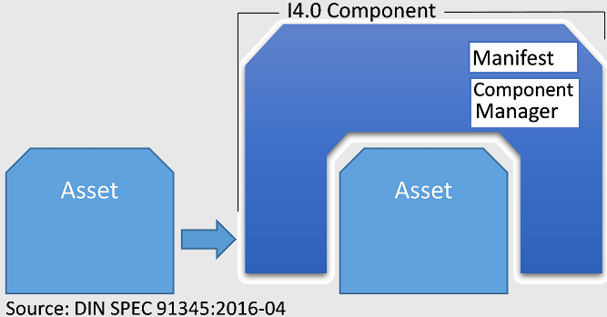

Concepts
- Asset: an object that has a value for an organization
- Manifest: a sentence of the metainformation that is externally accessible and gives information about functional and non-functional properties of I4.0-components
- Component Manager: Organiser of the self-administration and accessing to the resources of I4.0 components
Industry 4.0 Component
The industry 4.0 component is a member that is worldwide identifiable and is able to communicate. It consists of asset and administration shell with digital connections inside an I4.0 system, which offers services with defined Quality of Service (QoS). This comoponent can represent a production system, a single machine or a station as well as a group of components inside a machine. An asset is a I4.0-component only if it is provided by a administration shell. The administartion shell provides the information world with the relavant information about the asset and its functionality.
Partial Models (Views)
Each asset administration shell contains arbitrary number of partial models. Each partial model consists of organized characteristics that refer to individual data and functions. Partial models specify